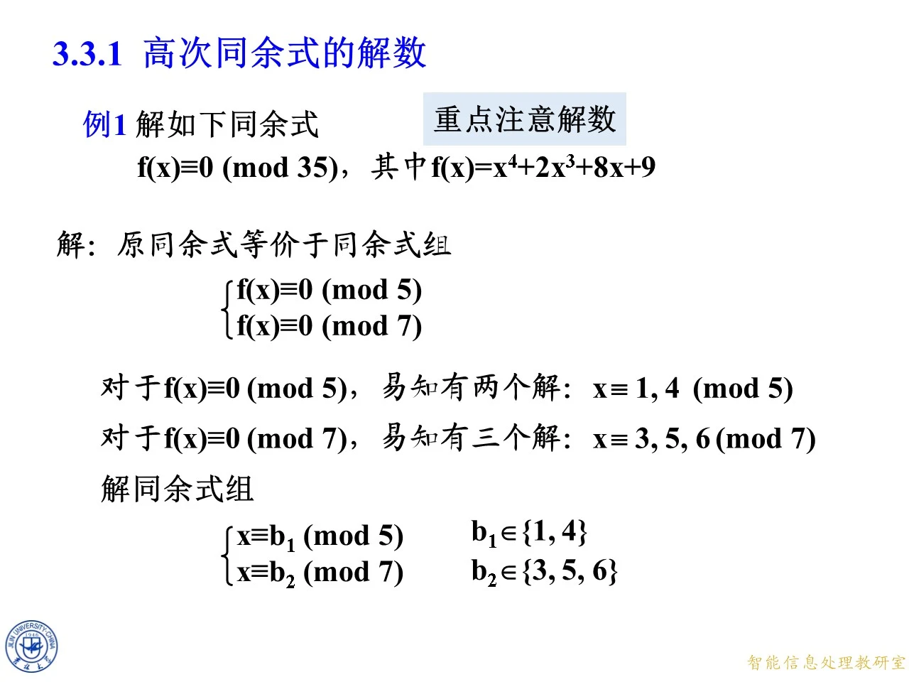
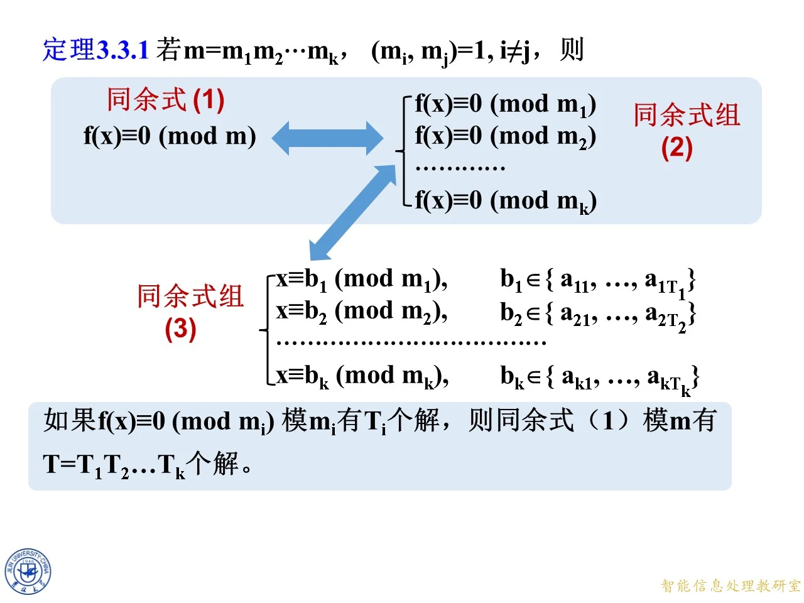

本节研究整系数高次同余式在合数模下有多少个解，以及怎样求出全部解。核心是把模分解为两两互素的因子，分别求根后再用中国剩余定理一一合并；这也解释了为什么合数模下的解数可以超过多项式的次数。末尾的模一百零八思考题进一步引出素数幂模上的根的提升，为下一小节的解法作准备。
3.3.1 高次同余式的解数
◆ p.4 ｜本节目录
本页给出第三章第三节的结构：先学习高次同余式的解数，再学习高次同余式的提升及应用，并注明原第三小节并入第二小节。本组课件对应第一部分，重点不是只找一个根，而是说明“不同子模的根怎样组合”“总共有多少个模意义下不同的根”。后续的提升方法将处理分解后出现的素数幂模。
例 1：四次同余式模 35 35 35
◆ p.5-8 ｜拆成模 5 5 5 7 7 7
例 1 要求解
f ( x ) ≡ 0 ( m o d 35 ) , f ( x ) = x 4 + 2 x 3 + 8 x + 9. f(x)\equiv0\pmod{35},\qquad f(x)=x^4+2x^3+8x+9. f ( x ) ≡ 0 ( mod 35 ) , f ( x ) = x 4 + 2 x 3 + 8 x + 9. 35 = 5 × 7 35=5\times7 35 = 5 × 7 gcd ( 5 , 7 ) = 1 \gcd(5,7)=1 g cd( 5 , 7 ) = 1 f ( x ) ≡ 0 ( m o d 5 ) , f ( x ) ≡ 0 ( m o d 7 ) . f(x)\equiv0\pmod5,\qquad f(x)\equiv0\pmod7. f ( x ) ≡ 0 ( mod 5 ) , f ( x ) ≡ 0 ( mod 7 ) . 35 ∣ f ( x ) 35\mid f(x) 35 ∣ f ( x ) 5 ∣ f ( x ) 5\mid f(x) 5 ∣ f ( x ) 7 ∣ f ( x ) 7\mid f(x) 7 ∣ f ( x ) 5 、 7 5、7 5 、 7 35 35 35
模 5 5 5 x = 0 , 1 , 2 , 3 , 4 x=0,1,2,3,4 x = 0 , 1 , 2 , 3 , 4 f ( x ) m o d 5 f(x)\bmod5 f ( x ) mod 5 4 , 0 , 2 , 3 , 0 4,0,2,3,0 4 , 0 , 2 , 3 , 0 x ≡ 1 , 4 ( m o d 5 ) . x\equiv1,4\pmod5. x ≡ 1 , 4 ( mod 5 ) . 7 7 7 x = 0 , 1 , 2 , 3 , 4 , 5 , 6 x=0,1,2,3,4,5,6 x = 0 , 1 , 2 , 3 , 4 , 5 , 6 f ( x ) m o d 7 f(x)\bmod7 f ( x ) mod 7 2 , 6 , 1 , 0 , 5 , 0 , 0 2,6,1,0,5,0,0 2 , 6 , 1 , 0 , 5 , 0 , 0 x ≡ 3 , 5 , 6 ( m o d 7 ) . x\equiv3,5,6\pmod7. x ≡ 3 , 5 , 6 ( mod 7 ) .
设一个模 35 35 35 b 1 、 b 2 b_1、b_2 b 1 、 b 2 x ≡ b 1 ( m o d 5 ) , x ≡ b 2 ( m o d 7 ) , x\equiv b_1\pmod5,\qquad x\equiv b_2\pmod7, x ≡ b 1 ( mod 5 ) , x ≡ b 2 ( mod 7 ) , b 1 ∈ { 1 , 4 } b_1\in\{1,4\} b 1 ∈ { 1 , 4 } b 2 ∈ { 3 , 5 , 6 } b_2\in\{3,5,6\} b 2 ∈ { 3 , 5 , 6 } 2 × 3 = 6 2\times3=6 2 × 3 = 6 35 35 35
◆ p.9 ｜求中国剩余定理的合并系数并代入六组根
对同余式组 x ≡ b 1 ( m o d 5 ) x\equiv b_1\pmod5 x ≡ b 1 ( mod 5 ) x ≡ b 2 ( m o d 7 ) x\equiv b_2\pmod7 x ≡ b 2 ( mod 7 ) M 1 = 35 / 5 = 7 M_1=35/5=7 M 1 = 35/5 = 7 M 2 = 35 / 7 = 5 M_2=35/7=5 M 2 = 35/7 = 5 7 M 1 ′ ≡ 1 ( m o d 5 ) , 5 M 2 ′ ≡ 1 ( m o d 7 ) . 7M_1'\equiv1\pmod5,\qquad5M_2'\equiv1\pmod7. 7 M 1 ′ ≡ 1 ( mod 5 ) , 5 M 2 ′ ≡ 1 ( mod 7 ) . 7 ≡ 2 ( m o d 5 ) 7\equiv2\pmod5 7 ≡ 2 ( mod 5 ) 2 × 3 = 6 ≡ 1 ( m o d 5 ) 2\times3=6\equiv1\pmod5 2 × 3 = 6 ≡ 1 ( mod 5 ) M 1 ′ ≡ 3 ( m o d 5 ) M_1'\equiv3\pmod5 M 1 ′ ≡ 3 ( mod 5 ) 5 × 3 = 15 ≡ 1 ( m o d 7 ) 5\times3=15\equiv1\pmod7 5 × 3 = 15 ≡ 1 ( mod 7 ) M 2 ′ ≡ 3 ( m o d 7 ) M_2'\equiv3\pmod7 M 2 ′ ≡ 3 ( mod 7 ) x ≡ 3 ⋅ 7 ⋅ b 1 + 3 ⋅ 5 ⋅ b 2 = 21 b 1 + 15 b 2 ( m o d 35 ) . x\equiv3\cdot7\cdot b_1+3\cdot5\cdot b_2=21b_1+15b_2\pmod{35}. x ≡ 3 ⋅ 7 ⋅ b 1 + 3 ⋅ 5 ⋅ b 2 = 21 b 1 + 15 b 2 ( mod 35 ) . 21 ≡ 1 ( m o d 5 ) 21\equiv1\pmod5 21 ≡ 1 ( mod 5 ) 21 ≡ 0 ( m o d 7 ) 21\equiv0\pmod7 21 ≡ 0 ( mod 7 ) 15 ≡ 0 ( m o d 5 ) 15\equiv0\pmod5 15 ≡ 0 ( mod 5 ) 15 ≡ 1 ( m o d 7 ) 15\equiv1\pmod7 15 ≡ 1 ( mod 7 ) b 1 、 b 2 b_1、b_2 b 1 、 b 2
把六种选择逐一代入：
b 1 b_1 b 1 5 5 5 b 2 b_2 b 2 7 7 7 21 b 1 + 15 b 2 21b_1+15b_2 21 b 1 + 15 b 2 模 35 35 35
1 1 1 3 3 3 66 66 66 31 31 31
1 1 1 5 5 5 96 96 96 26 26 26
1 1 1 6 6 6 111 111 111 6 6 6
4 4 4 3 3 3 129 129 129 24 24 24
4 4 4 5 5 5 159 159 159 19 19 19
4 4 4 6 6 6 174 174 174 34 34 34
故全部解按课件顺序为
x ≡ 31 , 26 , 6 , 24 , 19 , 34 ( m o d 35 ) . \boxed{x\equiv31,\ 26,\ 6,\ 24,\ 19,\ 34\pmod{35}}. x ≡ 31 , 26 , 6 , 24 , 19 , 34 ( mod 35 ) . 6 , 19 , 24 , 26 , 31 , 34 6,19,24,26,31,34 6 , 19 , 24 , 26 , 31 , 34 f ( x ) f(x) f ( x ) 35 35 35 ( b 1 , b 2 ) (b_1,b_2) ( b 1 , b 2 )
◆ p.10 ｜本例的解数结论
本页在答案处补充强调“共 6 个解”。这个结论说明：四次多项式在模 35 35 35 5 5 5 7 7 7 2 × 3 2\times3 2 × 3
拓展 （课件外补充）：检验是否漏解时，应同时做两件事：一是确认每个子模的完整剩余系都已检验，二是确认所有根的组合都已代入统一公式。只验证六个答案成立，并不能单独证明没有第七个答案；“每个解必来自某组子模根”才排除了其他可能。

课件原图 · 10月9日授课 · 第 8 页 查看前后已收录原页 → 定理 3.3.1：合数模同余式的解数等于各子模解数之积
◆ p.11-14 ｜从原同余式到各子模同余式组
定理 3.3.1 设
m = m 1 m 2 ⋯ m k , gcd ( m i , m j ) = 1 ( i ≠ j ) , m=m_1m_2\cdots m_k,\qquad\gcd(m_i,m_j)=1\quad(i\ne j), m = m 1 m 2 ⋯ m k , g cd( m i , m j ) = 1 ( i = j ) , f ( x ) ≡ 0 ( m o d m ) f(x)\equiv0\pmod m f ( x ) ≡ 0 ( mod m ) f ( x ) ≡ 0 ( m o d m 1 ) , f ( x ) ≡ 0 ( m o d m 2 ) , … , f ( x ) ≡ 0 ( m o d m k ) f(x)\equiv0\pmod{m_1},\quad f(x)\equiv0\pmod{m_2},\quad\ldots,\quad f(x)\equiv0\pmod{m_k} f ( x ) ≡ 0 ( mod m 1 ) , f ( x ) ≡ 0 ( mod m 2 ) , … , f ( x ) ≡ 0 ( mod m k ) m i m_i m i m m m m i m_i m i f ( x ) f(x) f ( x ) m m m f ( x ) f(x) f ( x )
进一步，若 f ( x ) ≡ 0 ( m o d m i ) f(x)\equiv0\pmod{m_i} f ( x ) ≡ 0 ( mod m i ) m i m_i m i T i T_i T i a i 1 , … , a i T i a_{i1},\ldots,a_{iT_i} a i 1 , … , a i T i x x x x ≡ b i ( m o d m i ) x\equiv b_i\pmod{m_i} x ≡ b i ( mod m i ) b i ∈ { a i 1 , … , a i T i } b_i\in\{a_{i1},\ldots,a_{iT_i}\} b i ∈ { a i 1 , … , a i T i } b 1 、 b 2 b_1、b_2 b 1 、 b 2
◆ p.15-17 ｜把每一组子模根写成同余式组（3）
本组动画把上述选择补全为 k k k x ≡ b 1 ( m o d m 1 ) , x ≡ b 2 ( m o d m 2 ) , … , x ≡ b k ( m o d m k ) , x\equiv b_1\pmod{m_1},\quad x\equiv b_2\pmod{m_2},\quad\ldots,\quad x\equiv b_k\pmod{m_k}, x ≡ b 1 ( mod m 1 ) , x ≡ b 2 ( mod m 2 ) , … , x ≡ b k ( mod m k ) , i i i b i ∈ { a i 1 , … , a i T i } . b_i\in\{a_{i1},\ldots,a_{iT_i}\}. b i ∈ { a i 1 , … , a i T i } . b i b_i b i i i i ( b 1 , … , b k ) (b_1,\ldots,b_k) ( b 1 , … , b k )
◆ p.18-19 ｜固定一组 b i b_i b i m m m
对任意固定的 ( b 1 , … , b k ) (b_1,\ldots,b_k) ( b 1 , … , b k ) m 1 , … , m k m_1,\ldots,m_k m 1 , … , m k m = m 1 ⋯ m k m=m_1\cdots m_k m = m 1 ⋯ m k m m m x = x 0 + m t x=x_0+mt x = x 0 + m t t t t
由前面的等价关系，这个唯一的剩余类也自动满足同余式（1）：它在每个 m i m_i m i b i b_i b i f ( x ) ≡ 0 ( m o d m i ) f(x)\equiv0\pmod{m_i} f ( x ) ≡ 0 ( mod m i ) i i i f ( x ) ≡ 0 ( m o d m ) f(x)\equiv0\pmod m f ( x ) ≡ 0 ( mod m )
◆ p.20-26 ｜不同组合给出不同解，且没有遗漏
第 i i i b i b_i b i T i T_i T i T 1 T 2 ⋯ T k T_1T_2\cdots T_k T 1 T 2 ⋯ T k m m m i i i m i m_i m i m m m m m m
另一方面，同余式（1）的任意解都满足同余式组（2），所以它在第 i i i a i j a_{ij} a ij ( b 1 , … , b k ) (b_1,\ldots,b_k) ( b 1 , … , b k )
◆ p.27-28 ｜得到解数乘积公式
综合“每组恰有一解”“不同组的解互不相同”“所有解都覆盖”三点，课件在本页补上结论：同余式（1）模 m m m T 1 T 2 ⋯ T k \boxed{T_1T_2\cdots T_k} T 1 T 2 ⋯ T k m m m
◆ p.29 ｜定理的最终紧凑表述
本页用一句话归纳：如果 f ( x ) ≡ 0 ( m o d m i ) f(x)\equiv0\pmod{m_i} f ( x ) ≡ 0 ( mod m i ) m i m_i m i T i T_i T i m m m T = T 1 T 2 ⋯ T k = ∏ i = 1 k T i . T=T_1T_2\cdots T_k=\prod_{i=1}^{k}T_i. T = T 1 T 2 ⋯ T k = i = 1 ∏ k T i . m = 35 = 5 × 7 m=35=5\times7 m = 35 = 5 × 7 T 1 = 2 T_1=2 T 1 = 2 T 2 = 3 T_2=3 T 2 = 3 T = 6 T=6 T = 6 T i = 0 T_i=0 T i = 0
拓展 （课件外补充）：两两互素是整条证明的关键条件。没有它，既不能把“所有 m i m_i m i f ( x ) f(x) f ( x ) m m m f ( x ) f(x) f ( x ) b i b_i b i

课件原图 · 10月9日授课 · 第 29 页 查看前后已收录原页 → 练习：解 x 4 + 7 x + 4 ≡ 0 ( m o d 18 ) x^4+7x+4\equiv0\pmod{18} x 4 + 7 x + 4 ≡ 0 ( mod 18 )
◆ p.30-33 ｜分解为模 2 2 2 9 9 9
练习设 f ( x ) = x 4 + 7 x + 4 f(x)=x^4+7x+4 f ( x ) = x 4 + 7 x + 4 f ( x ) ≡ 0 ( m o d 18 ) f(x)\equiv0\pmod{18} f ( x ) ≡ 0 ( mod 18 ) 18 = 2 × 9 18=2\times9 18 = 2 × 9 gcd ( 2 , 9 ) = 1 \gcd(2,9)=1 g cd( 2 , 9 ) = 1 f ( x ) ≡ 0 ( m o d 2 ) , f ( x ) ≡ 0 ( m o d 9 ) . f(x)\equiv0\pmod2,\qquad f(x)\equiv0\pmod9. f ( x ) ≡ 0 ( mod 2 ) , f ( x ) ≡ 0 ( mod 9 ) . 2 2 2 7 ≡ 1 7\equiv1 7 ≡ 1 4 ≡ 0 4\equiv0 4 ≡ 0 x 4 ≡ x ( m o d 2 ) x^4\equiv x\pmod2 x 4 ≡ x ( mod 2 ) x = 0 , 1 x=0,1 x = 0 , 1 f ( x ) ≡ x 4 + 7 x + 4 ≡ x + x = 2 x ≡ 0 ( m o d 2 ) . f(x)\equiv x^4+7x+4\equiv x+x=2x\equiv0\pmod2. f ( x ) ≡ x 4 + 7 x + 4 ≡ x + x = 2 x ≡ 0 ( mod 2 ) . 2 2 2 x ≡ 0 , 1 ( m o d 2 ) x\equiv0,1\pmod2 x ≡ 0 , 1 ( mod 2 ) T 1 = 2 T_1=2 T 1 = 2
模 9 9 9 x = 0 , 1 , … , 8 x=0,1,\ldots,8 x = 0 , 1 , … , 8 f ( x ) m o d 9 f(x)\bmod9 f ( x ) mod 9 4 , 3 , 7 , 7 , 0 , 7 , 1 , 6 , 7 4,3,7,7,0,7,1,6,7 4 , 3 , 7 , 7 , 0 , 7 , 1 , 6 , 7 x = 4 x=4 x = 4 0 0 0 x ≡ 4 ( m o d 9 ) x\equiv4\pmod9 x ≡ 4 ( mod 9 ) T 2 = 1 T_2=1 T 2 = 1 2 × 1 = 2 2\times1=2 2 × 1 = 2 18 18 18
◆ p.34-37 ｜合并两组条件，得到两个解
把两个分支写成
x ≡ b 1 ( m o d 2 ) , x ≡ b 2 ( m o d 9 ) , x\equiv b_1\pmod2,\qquad x\equiv b_2\pmod9, x ≡ b 1 ( mod 2 ) , x ≡ b 2 ( mod 9 ) , b 1 ∈ { 0 , 1 } b_1\in\{0,1\} b 1 ∈ { 0 , 1 } b 2 ∈ { 4 } b_2\in\{4\} b 2 ∈ { 4 } M 1 = 18 / 2 = 9 M_1=18/2=9 M 1 = 18/2 = 9 M 2 = 18 / 9 = 2 M_2=18/9=2 M 2 = 18/9 = 2 9 M 1 ′ ≡ 1 ( m o d 2 ) , 2 M 2 ′ ≡ 1 ( m o d 9 ) . 9M_1'\equiv1\pmod2,\qquad2M_2'\equiv1\pmod9. 9 M 1 ′ ≡ 1 ( mod 2 ) , 2 M 2 ′ ≡ 1 ( mod 9 ) . M 1 ′ = 1 M_1'=1 M 1 ′ = 1 M 2 ′ = 5 M_2'=5 M 2 ′ = 5 9 × 1 ≡ 1 ( m o d 2 ) 9\times1\equiv1\pmod2 9 × 1 ≡ 1 ( mod 2 ) 2 × 5 = 10 ≡ 1 ( m o d 9 ) 2\times5=10\equiv1\pmod9 2 × 5 = 10 ≡ 1 ( mod 9 ) x ≡ 1 ⋅ 9 ⋅ b 1 + 5 ⋅ 2 ⋅ b 2 = 9 b 1 + 10 b 2 ( m o d 18 ) . x\equiv1\cdot9\cdot b_1+5\cdot2\cdot b_2=9b_1+10b_2\pmod{18}. x ≡ 1 ⋅ 9 ⋅ b 1 + 5 ⋅ 2 ⋅ b 2 = 9 b 1 + 10 b 2 ( mod 18 ) . b 2 = 4 b_2=4 b 2 = 4 b 1 = 0 b_1=0 b 1 = 0 x ≡ 40 ≡ 4 ( m o d 18 ) x\equiv40\equiv4\pmod{18} x ≡ 40 ≡ 4 ( mod 18 ) b 1 = 1 b_1=1 b 1 = 1 x ≡ 49 ≡ 13 ( m o d 18 ) x\equiv49\equiv13\pmod{18} x ≡ 49 ≡ 13 ( mod 18 ) x ≡ 4 , 13 ( m o d 18 ) . \boxed{x\equiv4,13\pmod{18}}. x ≡ 4 , 13 ( mod 18 ) . 4 4 4 13 13 13 9 9 9 4 4 4
拓展 （课件外补充）：模 9 9 9 f ( x ) f(x) f ( x ) 3 3 3 9 9 9 3 3 3
思考：解 x 4 + 7 x + 4 ≡ 0 ( m o d 108 ) x^4+7x+4\equiv0\pmod{108} x 4 + 7 x + 4 ≡ 0 ( mod 108 )
◆ p.38-40 ｜先分解为模 4 4 4 27 27 27
思考题仍取 f ( x ) = x 4 + 7 x + 4 f(x)=x^4+7x+4 f ( x ) = x 4 + 7 x + 4 108 108 108 108 = 4 × 27 108=4\times27 108 = 4 × 27 gcd ( 4 , 27 ) = 1 \gcd(4,27)=1 g cd( 4 , 27 ) = 1 f ( x ) ≡ 0 ( m o d 4 ) , f ( x ) ≡ 0 ( m o d 27 ) . f(x)\equiv0\pmod4,\qquad f(x)\equiv0\pmod{27}. f ( x ) ≡ 0 ( mod 4 ) , f ( x ) ≡ 0 ( mod 27 ) . 4 = 2 2 4=2^2 4 = 2 2 27 = 3 3 27=3^3 27 = 3 3 27 27 27
拓展 （课件外补充）：下面补全课件未展开的过程。先看模 4 4 4 2 2 2 0 、 1 0、1 0 、 1 x = 2 t x=2t x = 2 t f ( 2 t ) = 16 t 4 + 14 t + 4 ≡ 2 t ( m o d 4 ) , f(2t)=16t^4+14t+4\equiv2t\pmod4, f ( 2 t ) = 16 t 4 + 14 t + 4 ≡ 2 t ( mod 4 ) , 0 0 0 t t t x ≡ 0 ( m o d 4 ) x\equiv0\pmod4 x ≡ 0 ( mod 4 ) x = 2 t + 1 x=2t+1 x = 2 t + 1 f ( 2 t + 1 ) = ( 2 t + 1 ) 4 + 7 ( 2 t + 1 ) + 4 ≡ 1 + 2 t + 3 = 2 t + 4 ( m o d 4 ) , f(2t+1)=(2t+1)^4+7(2t+1)+4\equiv1+2t+3=2t+4\pmod4, f ( 2 t + 1 ) = ( 2 t + 1 ) 4 + 7 ( 2 t + 1 ) + 4 ≡ 1 + 2 t + 3 = 2 t + 4 ( mod 4 ) , 0 0 0 t t t 4 4 4 x ≡ 1 x\equiv1 x ≡ 1 4 4 4 0 , 1 0,1 0 , 1
模 27 27 27 3 3 3 3 3 3 f ( x ) ≡ x 4 + x + 1 f(x)\equiv x^4+x+1 f ( x ) ≡ x 4 + x + 1 0 , 1 , 2 0,1,2 0 , 1 , 2 1 , 0 , 1 1,0,1 1 , 0 , 1 x ≡ 1 ( m o d 3 ) x\equiv1\pmod3 x ≡ 1 ( mod 3 ) 9 9 9 x = 1 + 3 s x=1+3s x = 1 + 3 s 9 9 9 f ( 1 + 3 s ) ≡ f ( 1 ) + 3 s f ′ ( 1 ) = 12 + 3 s ( 4 + 7 ) = 12 + 33 s ( m o d 9 ) . f(1+3s)\equiv f(1)+3s f'(1)=12+3s(4+7)=12+33s\pmod9. f ( 1 + 3 s ) ≡ f ( 1 ) + 3 s f ′ ( 1 ) = 12 + 3 s ( 4 + 7 ) = 12 + 33 s ( mod 9 ) . 12 + 33 s ≡ 0 ( m o d 9 ) 12+33s\equiv0\pmod9 12 + 33 s ≡ 0 ( mod 9 ) 3 + 6 s ≡ 0 ( m o d 9 ) 3+6s\equiv0\pmod9 3 + 6 s ≡ 0 ( mod 9 ) 1 + 2 s ≡ 0 ( m o d 3 ) 1+2s\equiv0\pmod3 1 + 2 s ≡ 0 ( mod 3 ) s ≡ 1 ( m o d 3 ) s\equiv1\pmod3 s ≡ 1 ( mod 3 ) 9 9 9 x ≡ 4 ( m o d 9 ) x\equiv4\pmod9 x ≡ 4 ( mod 9 )
再写 x = 4 + 9 t x=4+9t x = 4 + 9 t 9 9 9 f ( 4 + 9 t ) ≡ f ( 4 ) + 9 t f ′ ( 4 ) = 288 + 9 t ( 4 ⋅ 4 3 + 7 ) = 288 + 2367 t ( m o d 27 ) , f(4+9t)\equiv f(4)+9t f'(4)=288+9t(4\cdot4^3+7)=288+2367t\pmod{27}, f ( 4 + 9 t ) ≡ f ( 4 ) + 9 t f ′ ( 4 ) = 288 + 9 t ( 4 ⋅ 4 3 + 7 ) = 288 + 2367 t ( mod 27 ) , 288 ≡ 18 ( m o d 27 ) 288\equiv18\pmod{27} 288 ≡ 18 ( mod 27 ) 2367 ≡ 18 ( m o d 27 ) 2367\equiv18\pmod{27} 2367 ≡ 18 ( mod 27 ) 18 + 18 t ≡ 0 ( m o d 27 ) . 18+18t\equiv0\pmod{27}. 18 + 18 t ≡ 0 ( mod 27 ) . gcd ( 18 , 27 ) = 9 \gcd(18,27)=9 g cd( 18 , 27 ) = 9 2 + 2 t ≡ 0 ( m o d 3 ) 2+2t\equiv0\pmod3 2 + 2 t ≡ 0 ( mod 3 ) t ≡ 2 ( m o d 3 ) t\equiv2\pmod3 t ≡ 2 ( mod 3 ) 27 27 27 x ≡ 4 + 9 × 2 = 22 ( m o d 27 ) . x\equiv4+9\times2=22\pmod{27}. x ≡ 4 + 9 × 2 = 22 ( mod 27 ) .
最后解 x ≡ a ( m o d 4 ) x\equiv a\pmod4 x ≡ a ( mod 4 ) x ≡ 22 ( m o d 27 ) x\equiv22\pmod{27} x ≡ 22 ( mod 27 ) a a a 4 4 4 0 , 1 0,1 0 , 1 x = 22 + 27 t x=22+27t x = 22 + 27 t 22 + 27 t ≡ 2 + 3 t ≡ a ( m o d 4 ) , 3 t ≡ a − 2 ( m o d 4 ) . 22+27t\equiv2+3t\equiv a\pmod4,\qquad 3t\equiv a-2\pmod4. 22 + 27 t ≡ 2 + 3 t ≡ a ( mod 4 ) , 3 t ≡ a − 2 ( mod 4 ) . 3 − 1 ≡ 3 ( m o d 4 ) 3^{-1}\equiv3\pmod4 3 − 1 ≡ 3 ( mod 4 ) t ≡ 3 ( a − 2 ) ( m o d 4 ) t\equiv3(a-2)\pmod4 t ≡ 3 ( a − 2 ) ( mod 4 ) a = 0 , 1 a=0,1 a = 0 , 1 t ≡ 2 , 1 ( m o d 4 ) t\equiv2,1\pmod4 t ≡ 2 , 1 ( mod 4 ) x ≡ 76 , 49 ( m o d 108 ) . x\equiv76,\ 49\pmod{108}. x ≡ 76 , 49 ( mod 108 ) . x ≡ 49 , 76 ( m o d 108 ) . \boxed{x\equiv49,76\pmod{108}}. x ≡ 49 , 76 ( mod 108 ) . 49 ≡ 1 ( m o d 4 ) 49\equiv1\pmod4 49 ≡ 1 ( mod 4 ) 49 ≡ 22 ( m o d 27 ) 49\equiv22\pmod{27} 49 ≡ 22 ( mod 27 ) 76 ≡ 0 ( m o d 4 ) 76\equiv0\pmod4 76 ≡ 0 ( mod 4 ) 76 ≡ 22 ( m o d 27 ) 76\equiv22\pmod{27} 76 ≡ 22 ( mod 27 ) 4 4 4 0 , 1 0,1 0 , 1 27 27 27 22 22 22 2 × 1 = 2 2\times1=2 2 × 1 = 2